Visão Geral do Sistema
O Monitor de Links é um monitor de estabilidade de internet projetado para acompanhar o funcionamento dos seus links e equipamentos de rede em tempo real. Ele monitora a latência, a oscilação de sinal e a perda de pacotes de dados, alertando instantaneamente no Telegram se ocorrer alguma queda.
🖥️ Telas do Sistema
O sistema do dispositivo conta com 3 interfaces principais acessíveis do seu computador ou celular. Veja a explicação de cada uma delas abaixo:
1. Tela Principal (Painel de Status)
Exibe o estado operacional atual do dispositivo e as estatísticas do dia. Ela é dividida nos seguintes quadros:
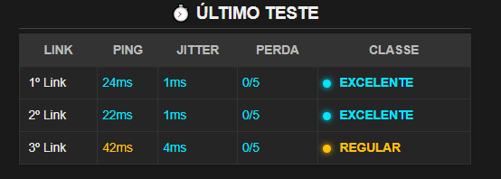
Varredura instantânea de cada operadora ativa:
- PING (Atraso/Latência): Tempo de resposta da conexão.
🟢 Excelente: até 28ms | 🔵 Bom: até 35ms | 🟡 Regular: até 55ms | 🔴 Ruim: acima de 55ms - JITTER (Instabilidade): Variação de atraso. Quanto menor, mais estável é a sua internet.
🟢 Excelente: até 4ms | 🔵 Bom: até 8ms | 🟡 Regular: até 15ms | 🔴 Ruim: acima de 15ms - PERDA: Porcentagem de falhas no envio de dados.
🟢 Excelente: até 1% | 🟡 Regular: até 20% | 🔴 Ruim: acima de 20%
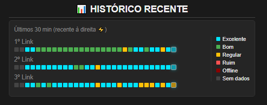
Linha do tempo composta por 30 blocos que mostram a qualidade dos últimos 30 testes de conexão (a leitura é feita da esquerda para a direita, sendo o bloco mais à direita o teste mais recente).
Cada quadrado representa o estado geral da rede no momento:
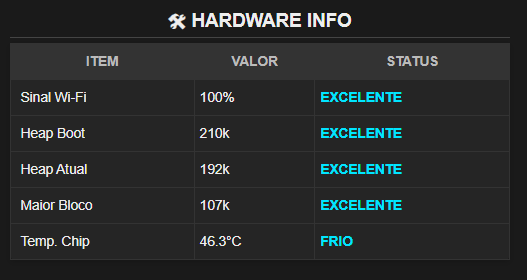
Quadro com o estado de saúde física e conectividade local do aparelho:
- Sinal Wi-Fi: Qualidade de recepção do sinal de Wi-Fi local.
🟢 Excelente: 100% a 80% (-30 a -50 dBm)
🔵 Bom: 79% a 60% (-51 a -67 dBm)
🟡 Regular: 59% a 30% (-68 a -79 dBm)
🔴 Ruim: 29% a 10% (-80 a -89 dBm) - Memória Inicial & Atual: Indica a memória interna livre disponível para processamento, garantindo que o aparelho opere sem travamentos.
- Temperatura: Temperatura interna do aparelho (FRIO, NORMAL ou QUENTE).
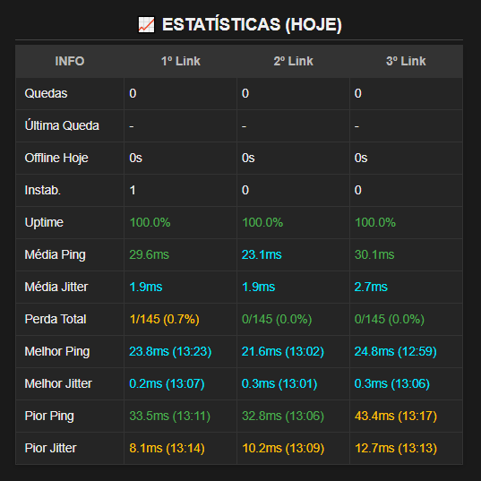
Histórico geral acumulado desde o início do dia:
- Quedas & Tempo Offline: Quantidade de quedas registradas e tempo total acumulado em que cada conexão ficou fora do ar hoje.
- Uptime: Porcentagem de tempo em que a conexão ficou online hoje.
- Melhor/Pior Latência: Os menores e maiores atrasos de sinal registrados, marcando a hora exata da ocorrência.
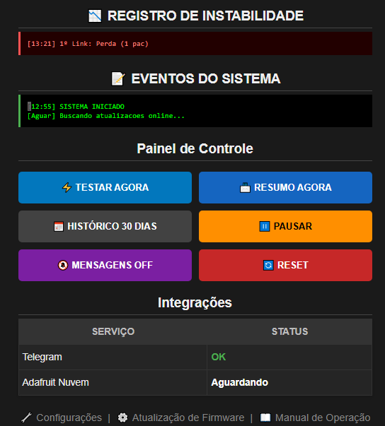
- Registro de Instabilidade: Histórico das falhas de conexão rápidas.
- Eventos do Sistema: Log interno do aparelho (sincronização de relógio, verificação de novas atualizações, etc.).
- Painel de Controle: Botões para testar agora, enviar resumo diário, pausar monitoramento, silenciar alertas do Telegram ou reiniciar o aparelho.
2. Tela de Configurações (/config)
Esta tela permite personalizar o comportamento do monitor de rede. Veja a explicação de cada quadro configurável:
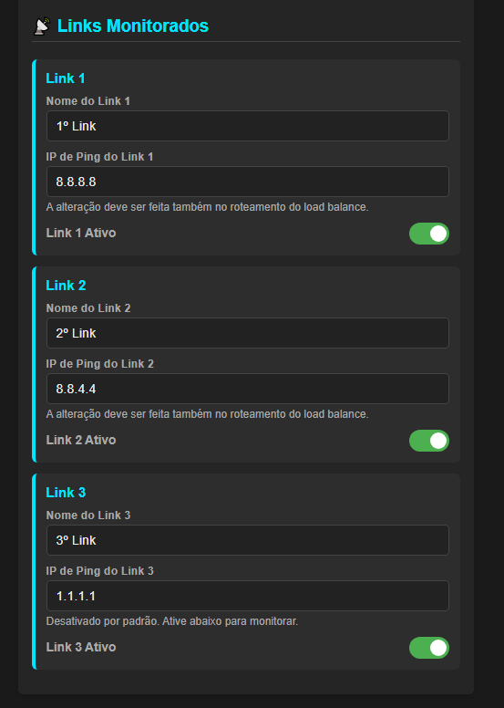
Configuração dos até 3 links que serão testados de forma paralela e independente:
- Nome do Link: Nome amigável que aparecerá nos logs, tabelas e relatórios (ex: Vivo Fibra, Starlink).
- IP de Ping: O endereço público estável contra o qual os testes de ping serão realizados.
- Link Ativo: Chave liga/desliga para ativar ou desativar o monitoramento do link.
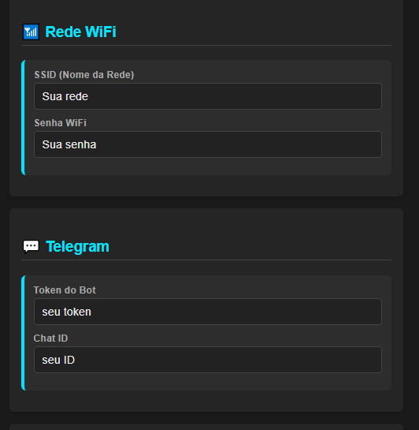
Definição do nome do sinal Wi-Fi (SSID) e a respectiva senha de segurança da internet local em que o monitor deve se conectar para realizar os testes.
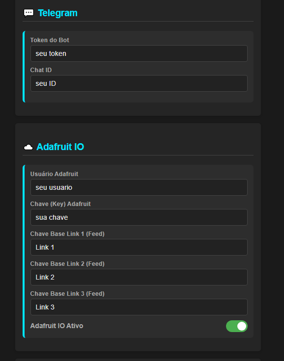
- Telegram: Campos para inserir o Token do Bot e o Chat ID cadastrado para o recebimento das mensagens de alerta no seu celular.
- Adafruit IO: Permite inserir o usuário, chave e feeds para exibir dados gráficos em tempo real em um painel externo se desejar.
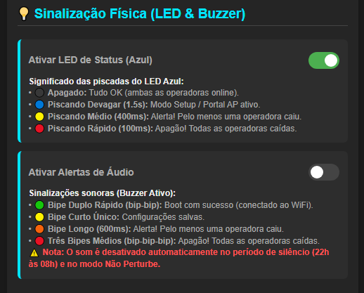
Defina as preferências visuais e sonoras diretamente na memória do aparelho:
- Ativar Luz de Status: Liga ou desliga as piscadas da luz azul de rede.
- Ativar Alertas de Áudio: Liga ou desliga os bipes sonoros de alerta (eles são silenciados automaticamente no horário noturno configurado das 22h às 08h).
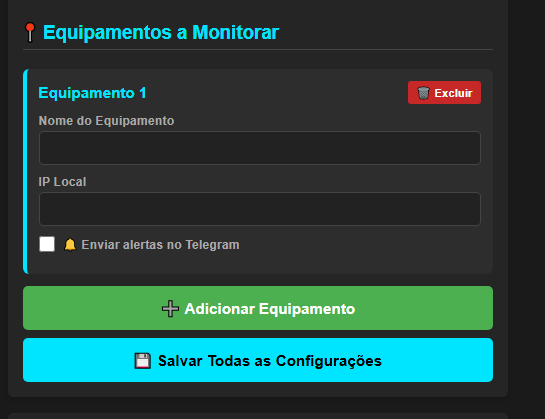
Lista dinâmica para cadastrar IPs de dispositivos locais importantes (como impressoras, servidores ou computadores). Se eles ficarem fora do ar, o monitor enviará um aviso no Telegram.
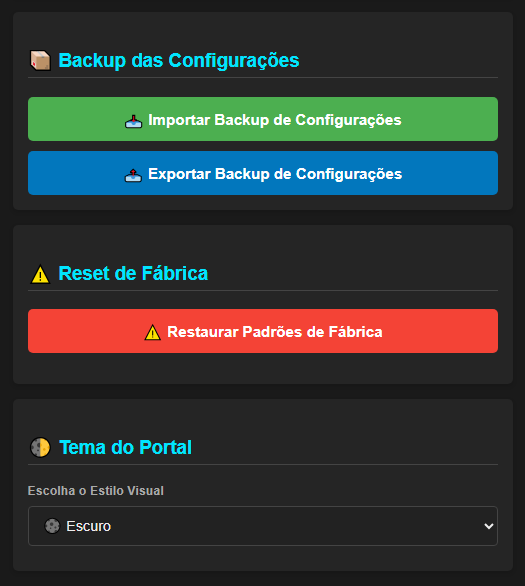
- Backup: Permite exportar ou importar todas as configurações de rede e Telegram em formato JSON para restauração rápida.
- Restauração: Botão vermelho para restaurar todos os padrões originais de fábrica do aparelho.
- Estilo Visual: Seletor visual para alterar o tema de cores do portal local.
3. Tela de Atualização (/update)
Interface dedicada para a instalação de atualizações de melhorias de forma manual ou automática:
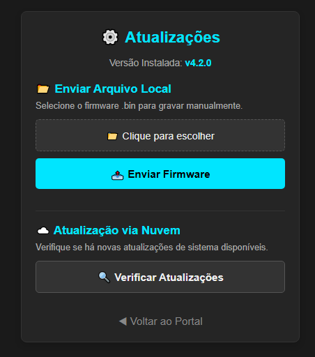
Módulo para enviar e gravar novos firmwares manualmente através de arquivos compactados .bin:
- Seleção do Arquivo: Escolha o arquivo de atualização compilado no computador.
- Envio & Gravação: Transmite o arquivo para o monitor com uma barra de progresso em tempo real.
- Reboot automático: Reinicia fisicamente o aparelho e testa a reconexão automática com contagem de 30 segundos.
Método simplificado de um clique para buscar e instalar atualizações direto dos nossos servidores online:
- Busca automática: Verifica novas versões com um clique.
- Atualizar Agora: Um botão verde destacado permite disparar o download imediato caso haja atualizações.
- Instalação Segura: Baixa, valida o arquivo, instala, reinicia e monitora a volta da rede com contagem de 60 segundos.
🔌 Guia do Equipamento
Entenda o funcionamento físico do aparelho de monitoramento: seus botões, leds e avisos sonoros integrados.
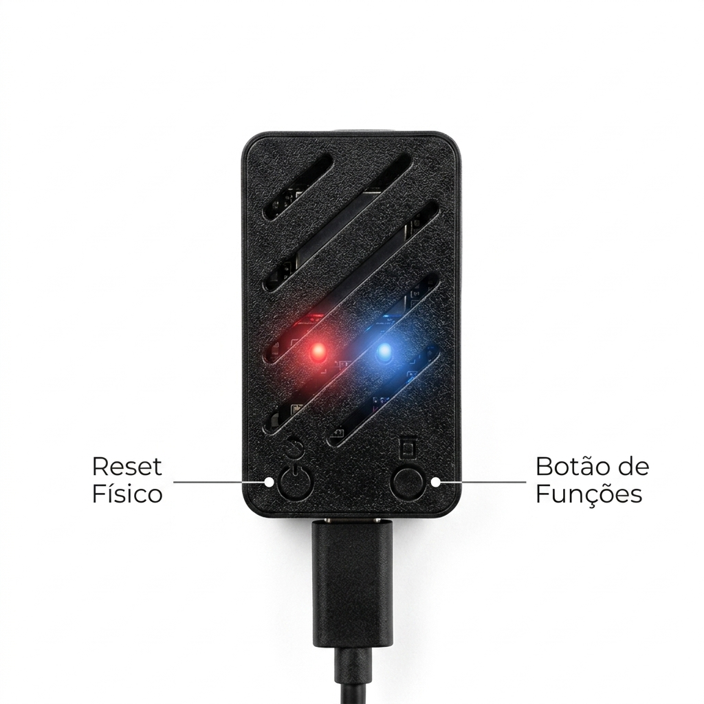
🔘 Botões Físicos Integrados
- Reset Físico (Botão Esquerdo): Reinicia o aparelho imediatamente se necessário.
- Botão de Funções (Botão Direito): Executa ações rápidas:
- 1 Clique Curto: Envia o relatório de status resumido atual imediatamente para o Telegram.
- 2 Cliques Rápidos: Roda um teste de conexão completo na hora e envia os detalhes no Telegram.
- Pressionar por 5 segundos: Restaura as configurações originais de fábrica (Reset de Fábrica), apagando todas as definições salvas.
💡 Leds de Status (Luz de Sinalização)
O aparelho conta com uma luz azul indicativa do estado da sua conexão de internet:
| Comportamento da Luz | Significado Operacional |
|---|---|
| Apagado | Tudo OK. Todos os links de internet monitorados estão funcionando perfeitamente. |
| Piscando Devagar | Alerta parcial. Pelo menos uma das conexões monitoradas caiu ou está offline. |
| Piscando Rápido | Queda geral. Todas as conexões de internet configuradas caíram simultaneamente. |
🔊 Avisos Sonoros (Bipes do Aparelho)
O aparelho emite avisos sonoros curtos e não obstrutivos para confirmar comandos ou alertar sobre blackouts de rede:
- 2 Bipes Curtos: Emitidos ao ligar o aparelho para confirmar que ele iniciou e conectou ao sinal Wi-Fi com sucesso.
- 1 Bipe Médio: Emitido para confirmar o clique no Botão de Funções.
- 3 Bipes Médios: Alerta sonoro indicando que ocorreu uma queda total de internet.
- 1 Bipe Longo: Emitido para confirmar que o aparelho realizou a Restauração de Fábrica com sucesso.
Nota: O sinalizador sonoro é desativado automaticamente no período de silêncio configurado nas opções (ex: no período noturno) para evitar incômodos.
🤖 Notificações e Alertas do Telegram
Abaixo estão descritos todos os tipos de alertas e relatórios automatizados enviados pelo Bot do Telegram para mantê-lo informado sobre a estabilidade da sua rede:
Disparado na hora em que o monitor detecta que um link de internet caiu por completo. O alerta traz o nome da operadora e o horário exato da queda.
Enviado assim que a conexão de internet é restabelecida e volta a ficar estável. Ele mostra o tempo total (em minutos e segundos) em que a rede ficou fora do ar.
Emitido caso a conexão com a operadora comece a falhar parcialmente (como perda rápida de dados ou atraso excessivo), indicando lentidão na navegação sem que a internet caia de vez.
Se você cadastrou algum aparelho interno (como um computador de escritório, impressora ou câmera) para ser monitorado e ele parar de responder na rede, o bot envia uma mensagem informando a perda de conexão deste aparelho específico.
Enviado automaticamente se o aparelho detectar que a equipe de desenvolvimento disponibilizou uma nova atualização de sistema para download.
Enviado de forma programada ou ao pressionar o botão de funções. Exibe a latência média (Ping) acumulada de cada operadora no dia, além do tempo total offline e taxa de estabilidade de cada link.
⚙️ Configuração Passo a Passo
Siga os procedimentos abaixo para conectar o monitor à sua rede local e ativar os alertas no seu celular:
🚀 Primeira Inicialização (Configuração de Wi-Fi)
Ao ligar o monitor pela primeira vez (ou se ele perder a conexão com a rede Wi-Fi configurada anteriormente):
- O aparelho emitirá bipes e a luz azul indicará que o portal de configuração está pronto.
- Ele criará uma rede Wi-Fi própria e temporária com as seguintes credenciais:
• Nome da Rede (SSID): MonitorAP
• Senha: 12345678 - No seu celular ou computador, abra a lista de redes Wi-Fi, conecte-se na rede MonitorAP e digite a senha 12345678.
- Após conectar, o seu navegador deverá abrir a tela de configuração automaticamente. Caso não abra, abra o navegador e digite o endereço:
192.168.4.1
📶 Como Conectar o Monitor à sua Rede Wi-Fi Local
Estando conectado na rede temporária do monitor:
- O portal mostrará o quadro Rede Wi-Fi (conforme a imagem acima).
- No campo SSID (Nome da Rede), digite o nome exato da rede Wi-Fi da sua casa ou empresa.
- No campo Senha WiFi, digite a respectiva senha da sua rede de internet.
- Preencha as demais configurações da página (como as operadoras e o Telegram) e clique no botão azul Salvar Todas as Configurações.
- O aparelho reiniciará, emitirá dois bipes curtos de sucesso, se conectará à sua internet local e desativará a rede temporária MonitorAP.
🚀 Otimização de Performance e Acesso (Recomendado)
Para garantir que os testes de ping/jitter tragam os resultados mais reais possíveis e que você nunca perca o acesso ao portal local, siga estas recomendações no painel do seu roteador Wi-Fi principal:
- Identificar o IP do Monitor (DHCP): Ao se conectar no seu Wi-Fi local, o monitor receberá um IP automático (ex:
192.168.1.150). Você pode descobrir esse IP consultando a lista de clientes conectados no aplicativo oficial do seu próprio roteador, no aplicativo Fing no celular ou em outros programas de varredura. O dispositivo aparecerá na rede identificado com o nome Monitor-Links. Localize-o e utilize o endereço IP dele para acessar o portal. - Reserva de IP (DHCP Static Lease): Configure uma reserva de IP vinculada ao endereço MAC do monitor nas preferências de DHCP do seu roteador. Isso garante que o monitor mantenha sempre o mesmo endereço de acesso.
- Desativar Rede Mesh para o Monitor: Se você utiliza roteadores Mesh em casa ou na empresa, configure o roteador principal para desativar a função de roaming Mesh/Fast Roaming especificamente para o MAC/IP do monitor. Isso previne oscilações e quedas de conexão quando o chip tenta alternar entre antenas de forma desnecessária.
- Priorização de Rede (QoS): Configure o monitor como um dispositivo de Alta Prioridade nas configurações de QoS (Quality of Service) do seu roteador. Isso evita que o ping/jitter do monitor sofra oscilações falsas causadas pelo tráfego de outros computadores (como downloads pesados ou streamings ocorrendo simultaneamente).
🔐 Acesso Restrito (Login e Senha do Portal)
Para proteger o monitor de acessos não autorizados por outras pessoas conectadas na sua rede local, as páginas de Configurações (/config) e de Atualizações (/update) exigem autenticação:
- Usuário de Acesso:
admin - Senha de Acesso: A mesma Senha do Wi-Fi que você cadastrou no monitor para ele se conectar à sua internet local.
🤖 2. Como Configurar o Bot do Telegram
Para criar o seu bot gratuito e obter as credenciais para colocar no painel do aparelho:
- Abra o Telegram e pesquise pelo contato oficial do @BotFather (certifique-se de que possui o selo azul de verificação).
- Abra a conversa e clique em Iniciar ou envie o comando
/newbot. - Dê um nome para o seu bot (ex: Meu Monitor de Rede) e depois escolha um nome de usuário único terminado com a palavra "bot" (ex: meu_monitor_exemplo_bot).
- O BotFather enviará uma mensagem contendo o seu Token de Acesso (um código longo misturando letras e números). Copie este código e cole no campo Token do Bot na tela de configurações do monitor.
- Para obter o seu Chat ID: Pesquise no Telegram pelo contato @userinfobot e envie qualquer mensagem. Ele responderá com o seu ID numérico. Copie este número e cole no campo Chat ID do configurador do monitor.
- Abra uma conversa com o seu próprio bot do monitor e envie um comando `/start` para permitir que ele fale com você.
☁️ 3. Como Configurar a Nuvem do Adafruit IO
O monitor suporta envio automático de dados de estabilidade para geração de gráficos históricos na plataforma Adafruit IO:
- Crie uma conta gratuita no site io.adafruit.com.
- Acesse a sua chave de autenticação clicando em "My Key" no painel da Adafruit e copie o nome de usuário e a chave API fornecidos.
- No portal de configurações do monitor, ative a chave Adafruit IO e preencha as credenciais. Os dados de estabilidade de ping e quedas de cada operadora serão enviados automaticamente a cada teste.
🤖 Criar Bot no Telegram
O monitor utiliza um robô (bot) do Telegram para enviar alertas de quedas e relatórios direto para o seu celular de forma 100% gratuita. Siga o passo a passo abaixo para criar o seu:
O BotFather (Pai dos Bots) é o contato oficial do Telegram para criação e gerenciamento de robôs.
- Abra o Telegram no seu celular ou computador.
- Pesquise na barra de busca por @BotFather (selecione apenas o com o selo azul de verificação).
- Inicie a conversa e clique em Começar (ou envie a mensagem
/start). - Envie o comando
/newbotpara criar um novo robô. - Digite um nome de exibição para o seu robô (ex:
Monitor de Rede Residencial). - Escolha um nome de usuário (username) para o robô. Este nome deve terminar obrigatoriamente com a palavra "bot" (ex:
monitor_casa_joao_bot). - O BotFather responderá com uma mensagem contendo o seu HTTP API Token (um código longo parecido com:
1234567890:ABCdefGhIJKlmNoPQRsTUVwxyZ). Copie este código e cole no configurador do monitor.
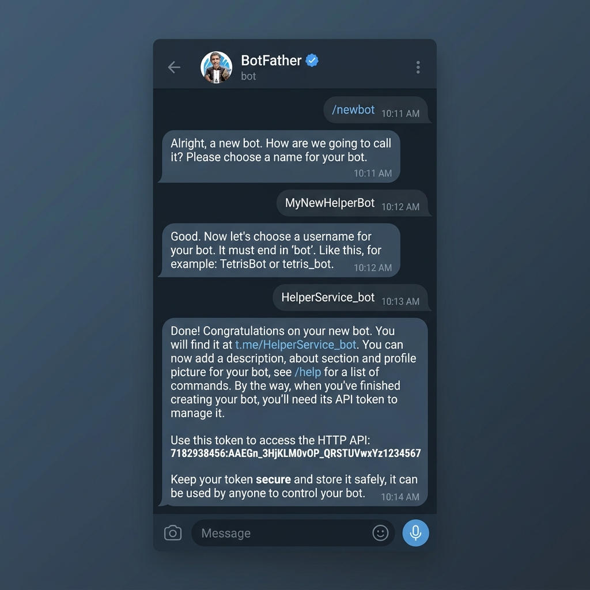
O Chat ID identifica a sua conversa pessoal que receberá as mensagens do robô.
- Pesquise no Telegram pelo contato @userinfobot e envie a mensagem
/start. - Ele responderá com um número de ID (ex:
987654321). Este número é o seu Chat ID. Copie e cole no configurador do monitor.
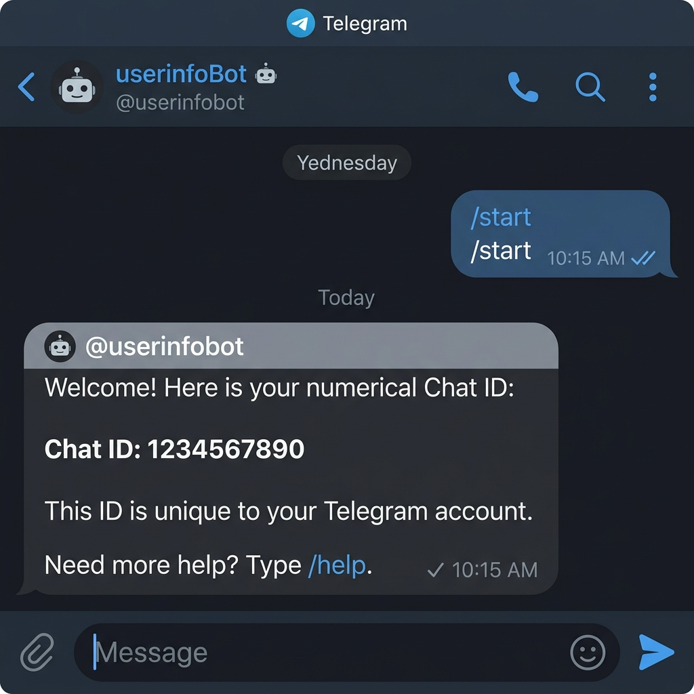
IMPORTANTE: O Telegram não permite que um robô envie mensagens para você sem a sua permissão inicial.
- Procure pelo nome de usuário (username) do seu robô no Telegram (aquele que você escolheu no passo 1).
- Inicie a conversa com ele e envie a mensagem
/start. - Pronto! Agora o robô está ativo e autorizado a enviar os alertas e relatórios do monitor para você.
🔀 Roteamento de Links (TP-Link ER605)
Para que o monitor identifique a queda individual de cada internet, cada operadora deve ser testada usando um IP diferente. Configure o roteador de carga (Load Balance) TP-Link ER605 para direcionar os testes de ping pelas saídas corretas:
Configure as seguintes regras de roteamento de política (Policy Routing) no seu roteador:
| IP de Destino | Link de Saída | Descrição |
|---|---|---|
| 8.8.8.8 | WAN 1 (Principal) | Testa o Link 1 (ex: Vivo) |
| 8.8.4.4 | WAN 2 (Secundário) | Testa o Link 2 (ex: Tim) |
| 1.1.1.1 | WAN 3 (Terciário) | Testa o Link 3 (Se ativo) |
No TP-Link ER605, as regras de roteamento de política não aceitam a digitação direta de endereços IP. Por isso, você deve primeiro registrar os IPs e grupos de destino. Siga as duas etapas abaixo:
Etapa 1: Cadastrar os IPs e Grupos de Destino
- Acesse a tela de administração do seu roteador TP-Link ER605 (geralmente pelo endereço IP
192.168.0.1) e insira usuário e senha. - No menu esquerdo, acesse Preferences > IP Group > IP Address.
- Clique no botão + Add para cadastrar o primeiro IP de teste:
- Name:
IP_Dest_Link1 - IP Address Type: Selecione
IP Address Range - IP Address Range: Digite
8.8.8.8 - 8.8.8.8 - Clique em OK.
- Name:
- Clique no botão + Add para cadastrar o segundo IP de teste:
- Name:
IP_Dest_Link2 - IP Address Type: Selecione
IP Address Range - IP Address Range: Digite
8.8.4.4 - 8.8.4.4 - Clique em OK.
- Name:
- Clique no botão + Add para cadastrar o terceiro IP de teste:
- Name:
IP_Dest_Link3 - IP Address Type: Selecione
IP Address Range - IP Address Range: Digite
1.1.1.1 - 1.1.1.1 - Clique em OK.
- Name:
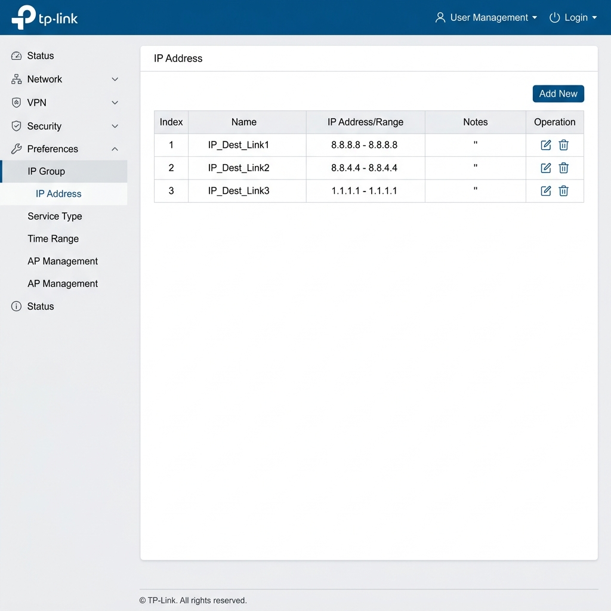
- No menu superior ou lateral, acesse a aba IP Group (dentro de Preferences > IP Group).
- Clique em + Add para criar o grupo do primeiro link:
- Name:
Grupo_Dest_Link1 - Address Name: Selecione na lista o cadastrado anteriormente:
IP_Dest_Link1 - Clique em OK.
- Name:
- Clique em + Add para criar o grupo do segundo link:
- Name:
Grupo_Dest_Link2 - Address Name: Selecione na lista:
IP_Dest_Link2 - Clique em OK.
- Name:
- Clique em + Add para criar o grupo do terceiro link:
- Name:
Grupo_Dest_Link3 - Address Name: Selecione na lista:
IP_Dest_Link3 - Clique em OK.
- Name:
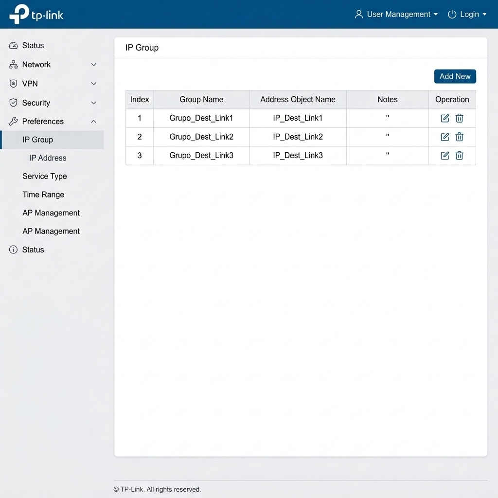
Etapa 2: Configurar o Roteamento de Política (Policy Routing)
- No menu esquerdo, acesse: Transmission > Routing > Policy Routing.
- Clique no botão + Add para criar a regra do primeiro link (Link 1 - ex: Vivo):
- Name:
Rota_Link_1 - Source IP: Selecione
IPGROUP_ANY - Destination IP: Selecione o grupo correspondente:
Grupo_Dest_Link1(que contém o IP 8.8.8.8) - WAN: Escolha a porta física da sua primeira operadora:
WAN(ouWAN1) - Status: Marque como
Enable - Clique em OK.
- Name:
- Clique no botão + Add para criar a regra do segundo link (Link 2 - ex: Tim):
- Name:
Rota_Link_2 - Source IP: Selecione
IPGROUP_ANY - Destination IP: Selecione o grupo correspondente:
Grupo_Dest_Link2(que contém o IP 8.8.4.4) - WAN: Escolha a porta física da sua segunda operadora:
WAN/LAN1(ouWAN2) - Status: Marque como
Enable - Clique em OK.
- Name:
- Clique no botão + Add para criar a regra do terceiro link (Link 3):
- Name:
Rota_Link_3 - Source IP: Selecione
IPGROUP_ANY - Destination IP: Selecione o grupo correspondente:
Grupo_Dest_Link3(que contém o IP 1.1.1.1) - WAN: Escolha a porta física da sua terceira operadora:
WAN/LAN2(ouWAN3) - Status: Marque como
Enable - Clique em OK.
- Name:
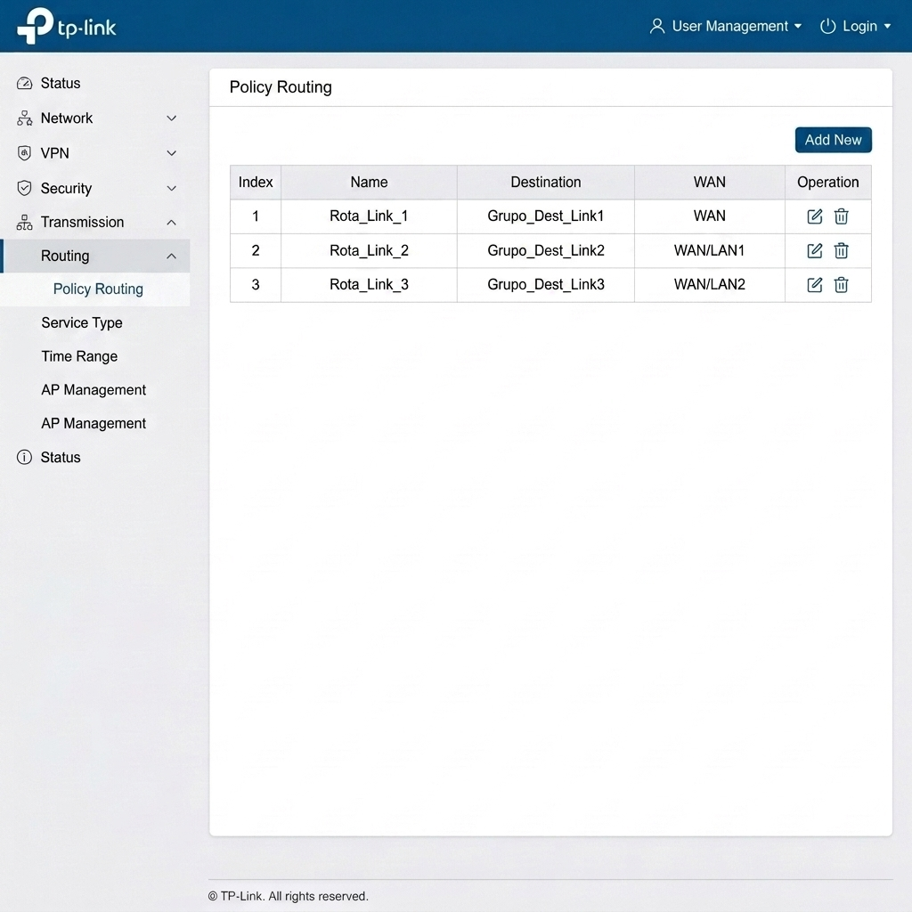